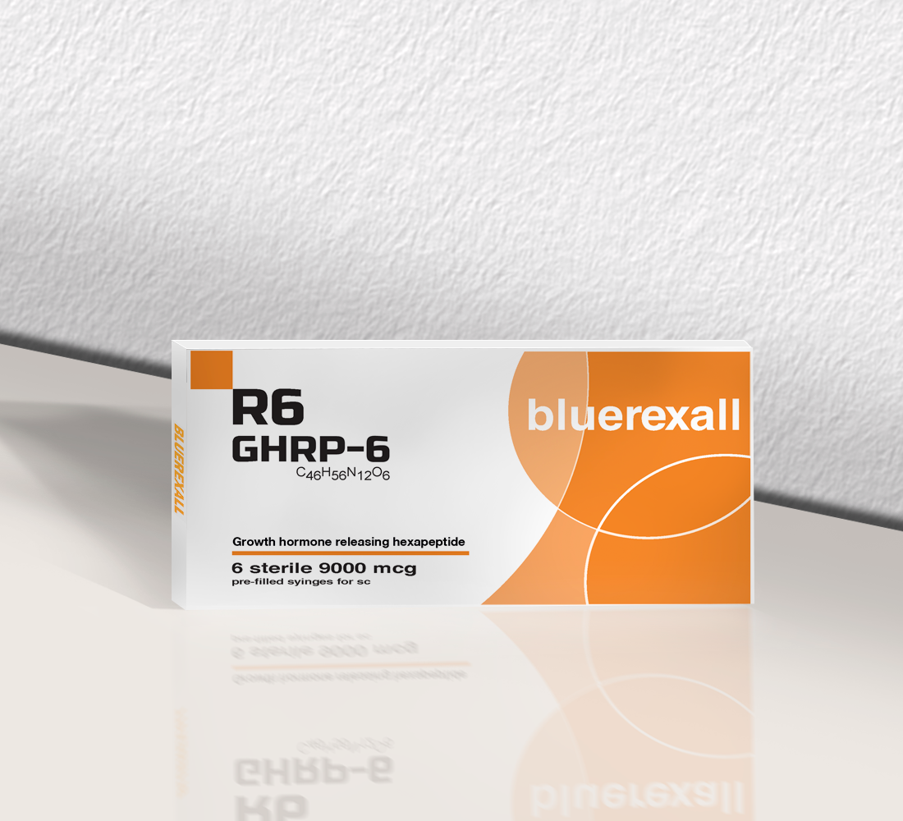
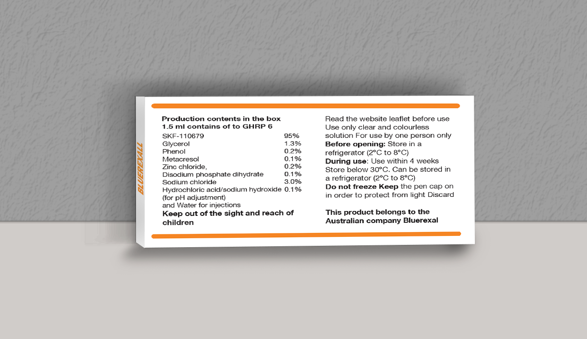
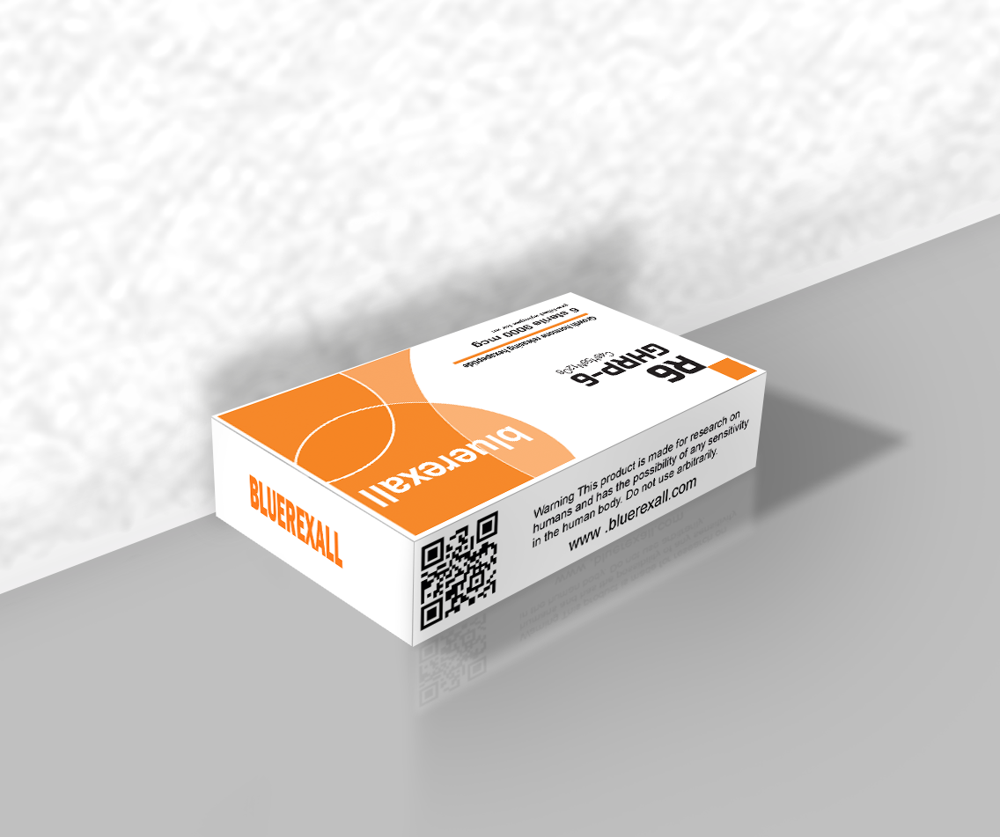

Research Use Only - Biotechnology Peptide



CJC-1295 DAC (Drug Affinity Complex) is a long-acting growth hormone releasing hormone (GHRH) analog that has been widely studied in scientific research focused on endocrine system regulation and growth hormone secretion pathways. Its molecular design allows it to bind to serum albumin, significantly extending its half-life in experimental environments.
In laboratory studies, CJC-1295 DAC is primarily used to investigate the mechanisms of growth hormone pulsatility and pituitary stimulation. Researchers analyze its effects on GH release patterns and downstream IGF-1 signaling pathways to better understand hormonal regulation in biological systems.
Due to its extended duration of action, CJC-1295 DAC is often used in controlled research models to observe sustained endocrine responses over time. This makes it particularly useful for studying long-term hormonal dynamics and metabolic regulation at the molecular level.
It is important to emphasize that CJC-1295 DAC is strictly intended for laboratory and research purposes only. It is not approved for human consumption, medical treatment, or any therapeutic application outside of controlled scientific environments.
Overall, CJC-1295 DAC remains an important research compound in molecular endocrinology, contributing to a deeper understanding of growth hormone regulation and peptide-based signaling systems.